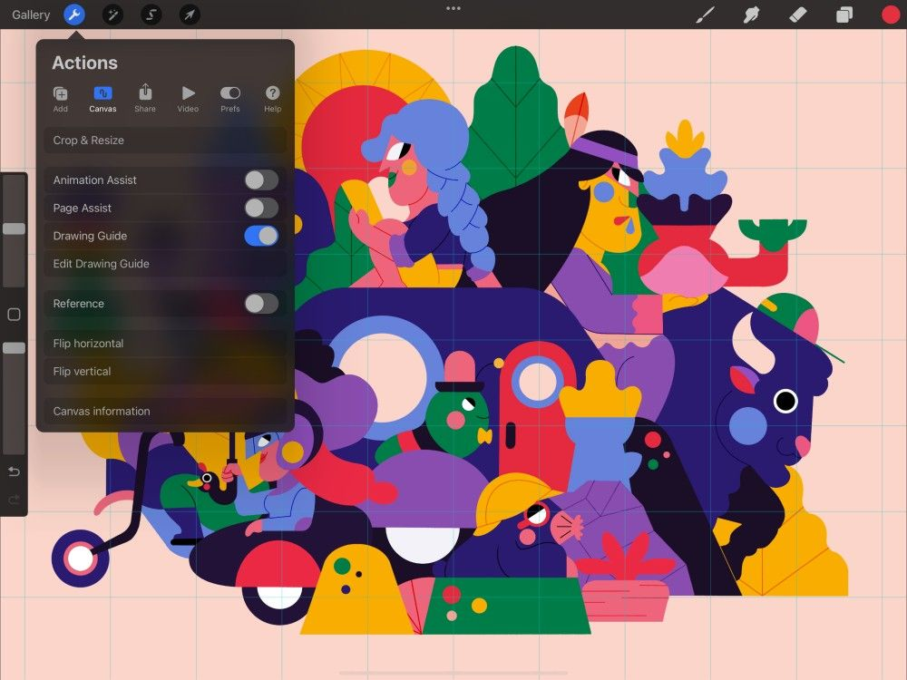
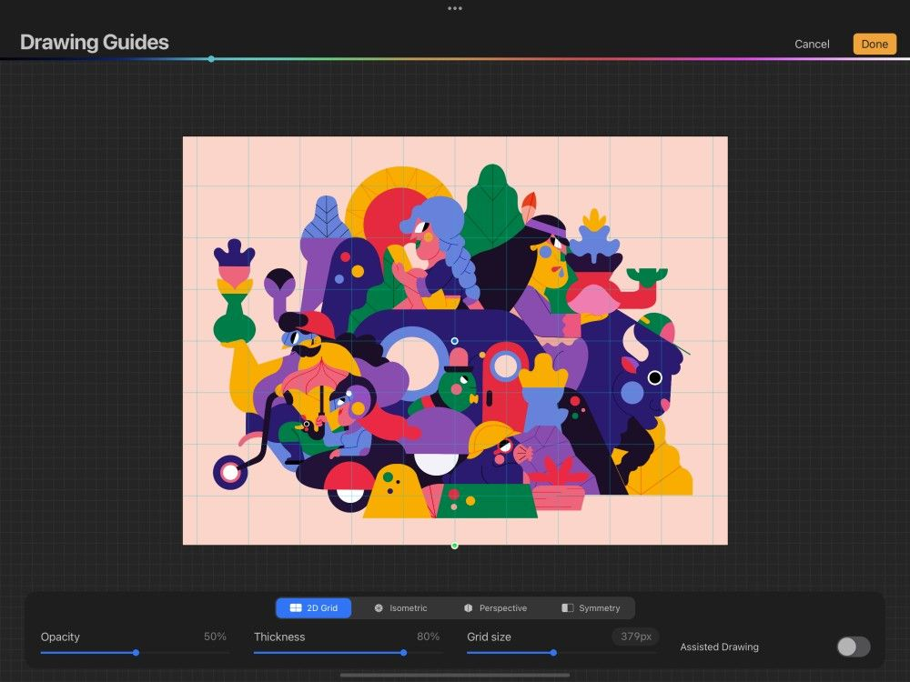

📖 Đã dịch sang tiếng Việt. Thuật ngữ chuyên môn giữ tiếng Anh — rê chuột để xem nghĩa (tooltip).
Create
Tạo nhiều dạng Drawing Guides (đường dẫn) giúp bạn xây dựng cấu trúc cho tác phẩm. Kích hoạt một đường dẫn, chọn các chức năng cần thiết và tinh chỉnh hiển thị của nó.
Kích hoạt
Thêm một đường dẫn trực quan lên khung vẽ để giúp bạn dựng môi trường và vật thể chân thực.


Chạm nút hình cái cờ lê ở góc trên bên trái màn hình để mở menu Actions. Chạm Canvas (khung vẽ), và gạt công tắc Drawing Guide (đường dẫn).
Drawing Guide của bạn hiện đã được kích hoạt.
Bạn cũng có thể kích hoạt Drawing Guide từ bảng Layers. Chạm một lần vào lớp chính để mở Layer Options (tùy chọn lớp), sau đó chạm Drawing Assist.
Thiết lập mặc định
Procreate sẽ mặc định dùng đường dẫn 2D Grid trong lần đầu bạn dùng Drawing Guide trên khung vẽ hiện tại.
Đã từng dùng Drawing Guide trên khung vẽ này? Procreate sẽ ghi nhớ các thiết lập trước đó và mặc định dùng chúng.
Màn hình Drawing Guides
Chọn từ nhiều dạng Drawing Guides để phù hợp với mọi mục đích.

Trong Actions → Canvas, chạm Edit Drawing Guide (chỉnh sửa đường dẫn). Thao tác này sẽ đưa bạn đến màn hình Drawing Guides.
Màn hình Drawing Guides sẽ tự động thu phóng để hiển thị toàn bộ tác phẩm. Nhờ đó bạn thấy được trọn vẹn hiệu ứng của Drawing Guide đã chọn.
Dùng Drawing Guides làm manh mối trực quan. Hoặc kích hoạt Drawing Assist để tự động căn nét vẽ theo hướng của các đường dẫn.
Giao diện Drawing Guides
Hủy các chỉnh sửa và quay lại khung vẽ.
Lưu các chỉnh sửa và quay lại khung vẽ.
Đặt màu cho các đường dẫn.
Truy cập các chế độ 2D Grid (lưới 2D), Isometric (trục đo), Perspective (phối cảnh) và Symmetry (đối xứng).
Đặt độ mờ (opacity) của các đường lưới.
Độ dày
Đặt độ dày của các đường lưới.
Cỡ lưới
Đặt cỡ của lưới 2D hoặc Isometric. Bạn có thể kéo thanh trượt, hoặc chạm vào thông số để nhập cỡ lưới chính xác.
Công tắc Drawing Assist
Bật hoặc tắt Drawing Assist.
Chọn một Drawing Guide
Các nút bên dưới tác phẩm cho phép bạn chọn giữa bốn loại đường dẫn vẽ. Mỗi đường dẫn được thiết kế để hỗ trợ công việc theo những cách khác nhau. Chúng được trình bày trong các trang Handbook tiếp theo.
- 2D Grid (lưới 2D) — lưới ô vuông để dựng các hình phẳng.
- Isometric (trục đo) — lưới tam giác để dựng các hình 3D mà không có hiệu ứng phối cảnh thu ngắn. Isometric lý tưởng cho hình minh họa kỹ thuật.
- Perspective (phối cảnh) — đường dẫn hình sao để dựng các hình 3D với các điểm tụ. Điều này tạo ra phối cảnh một điểm, hai điểm hoặc ba điểm. Perspective lý tưởng cho phong cảnh thành phố, phông nền truyện tranh, v.v.
- Symmetry (đối xứng) — đường dẫn được thiết kế để dùng cùng Drawing Assist nhằm phản chiếu nét vẽ. Chúng hoạt động theo chiều ngang, dọc, theo từng góc phần tư, hoặc theo tròn. Symmetry lý tưởng để tạo các hình phản chiếu, thiết kế lát nền và hoa văn kiểu vạn hoa.
Đổi hiển thị
Drawing Guide xuất hiện dưới dạng các đường mỏng phủ lên tác phẩm. Đổi hiển thị của đường dẫn bằng các tùy chọn ở dưới cùng giao diện Drawing Guides. Khám phá chi tiết hơn các tùy chọn này trong từng trang Drawing Guide riêng biệt.
Để lưu các thay đổi, hãy chạm Done (xong).
Still have questions?
If you didn't find what you're looking for, explore our video resources on YouTube or contact us directly. We’re always happy to help.